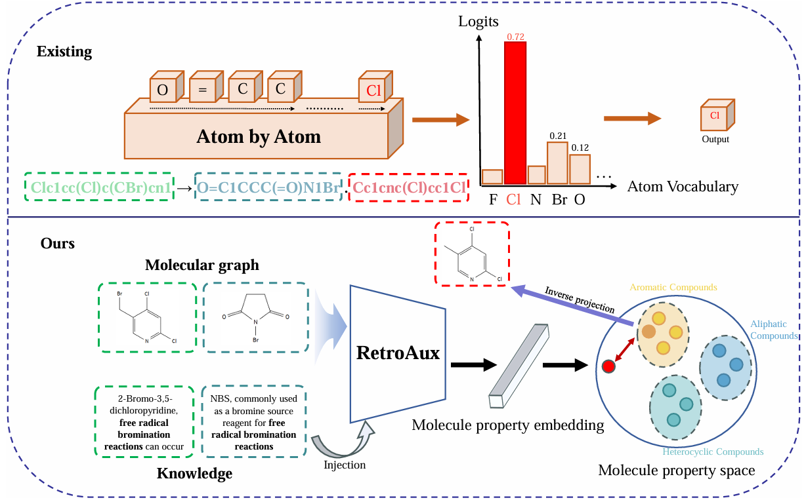
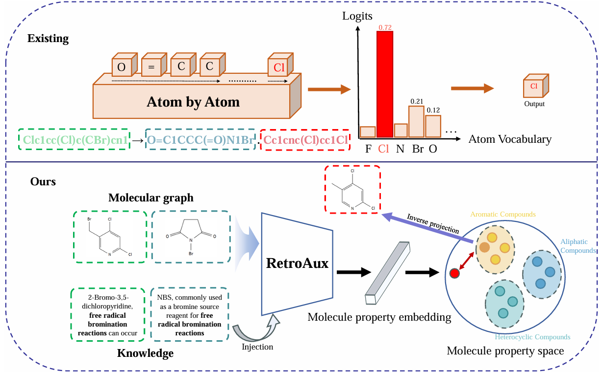

RetroAux: Boosting Retrosynthesis via Molecular Property-Aware Learning
Retrosynthesis remains a critical task in both drug discovery and organic synthesis. Current methodologies in this field predominantly rely on purely data-driven paradigms, where models are expected to autonomously learn reaction patterns from extensive retrosynthesis datasets without incorporating established chemical knowledge. To address this limitation, we introduce RetroAux, a framework injected with molecular property knowledge to enhance existing approaches and achieve significant performance improvements. Throughout the entire retrosynthesis pipeline—from reaction rule acquisition to reactant molecule generation—our methodology systematically integrates molecular property knowledge (e.g., functional groups, chirality) as both chemical priors and foundations, thereby enhancing retrosynthesis prediction reliability. Our knowledge-driven framework can be seamlessly integrated with multiple existing data-driven methods to improve their performance consistently. Experimental results demonstrate that RetroAux enhances various existing data-driven retrosynthesis models with average top-1 accuracy improvements of 2.39% without retraining original models, signifying a paradigm evolution in retrosynthesis from purely data-driven approaches to knowledge-driven methodologies.
 
